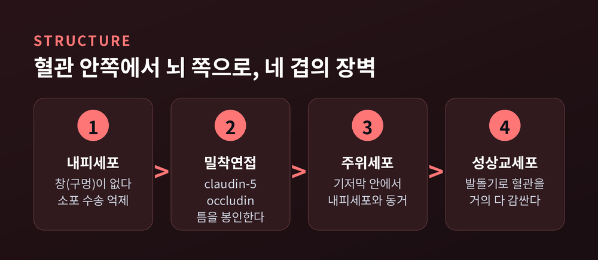
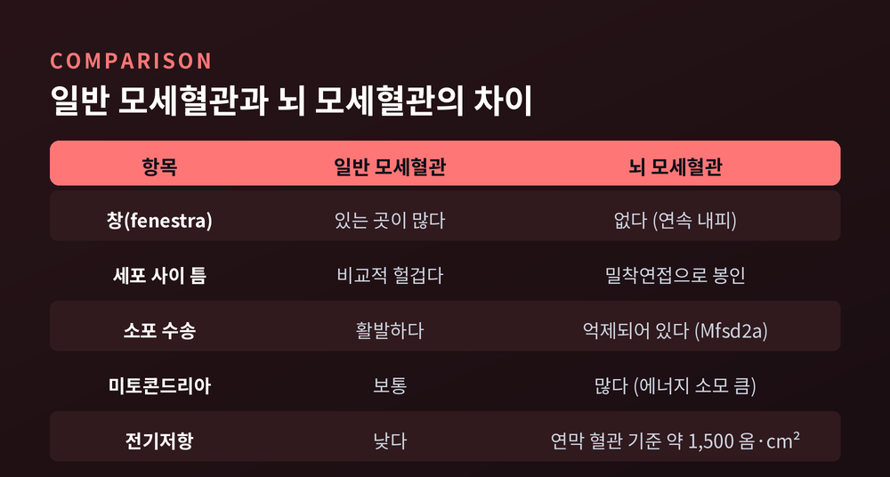
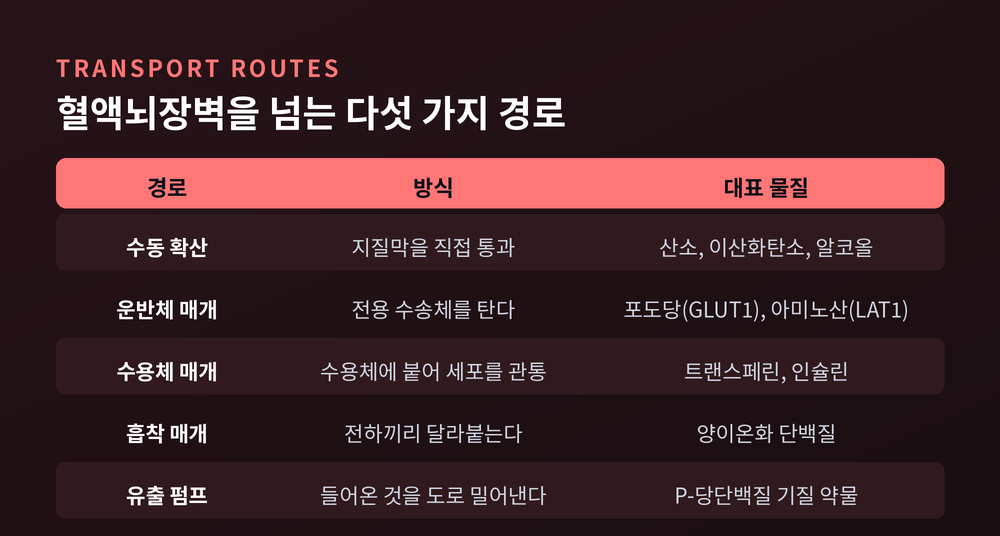
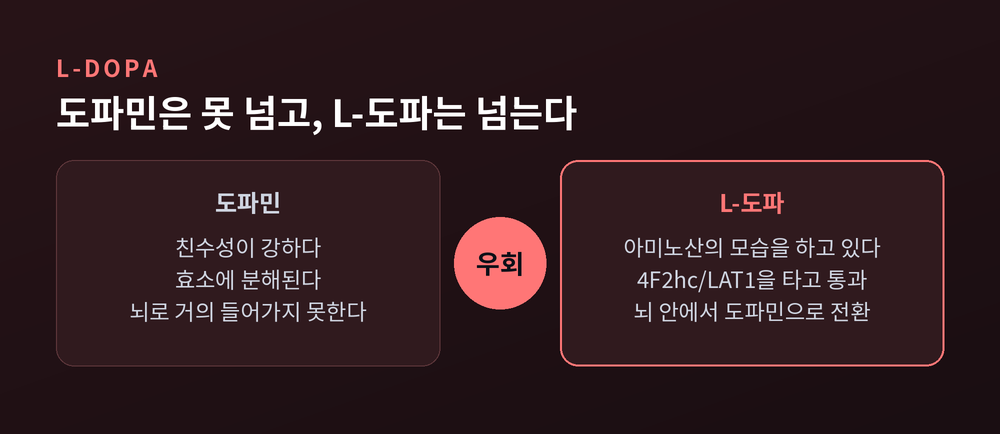
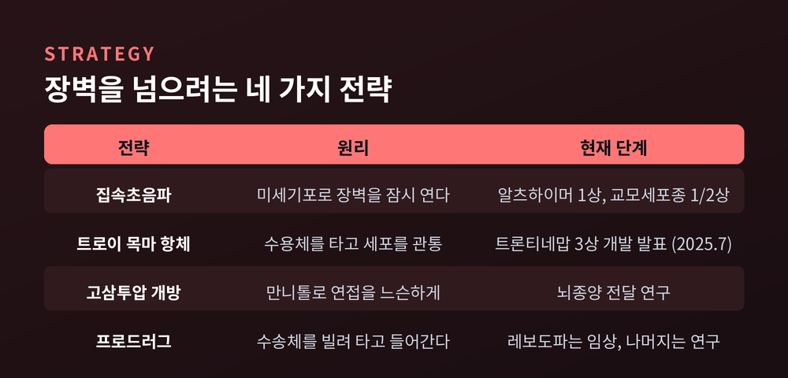

이번 글에서는 혈액뇌장벽(blood–brain barrier, BBB)을 정리해 보겠습니다. 뇌가 어떤 방식으로 자신을 격리하는지, 그 격리가 왜 신약 개발에서 가장 높은 벽으로 불리는지 차례로 살펴보겠습니다.
세 줄 요약
혈액뇌장벽의 존재는 100년 전 실험에서 드러났습니다.
Goldmann은 1909년과 1913년에 트리판 블루라는 색소를 동물에 주사했습니다. 색소를 전신 혈관에 넣으면 온몸이 파랗게 물드는데, 뇌만은 물들지 않았습니다. 같은 색소를 척수강 안에 직접 넣자 이번에는 뇌가 물들었습니다.
혈액과 뇌 사이에 무언가가 놓여 있다는 뜻이었습니다.
그 '무언가'의 정체가 밝혀지기까지는 반세기가 더 걸렸습니다. 답은 특별한 막이 아니라 혈관 자체의 구조였습니다.
먼저 규모를 짚고 넘어가겠습니다.
성인의 뇌에는 총 길이 약 600km에 이르는 미세혈관이 깔려 있습니다. 문헌에 따라 600~700km, 혹은 650km로도 보고됩니다. 물질 교환에 쓰이는 표면적은 12~25m² 범위로 추정되는데, 측정 대상을 무엇으로 잡느냐에 따라 값이 갈립니다.
모세혈관의 지름은 약 7μm입니다. 그리고 뇌의 모든 뉴런은 모세혈관에서 20μm 이내에 놓여 있습니다.
거리로만 보면 뇌세포와 혈액은 거의 맞닿아 있는 셈입니다. 그럼에도 둘 사이의 물질 이동은 엄격하게 통제됩니다. 그 통제가 이루어지는 자리가 바로 모세혈관의 벽입니다.

몸의 다른 곳에서 모세혈관은 꽤 헐겁습니다. 내피세포에 창(fenestra)이 뚫려 있고, 세포 사이에도 틈이 있습니다. 그래야 산소와 영양분이 조직으로 빠르게 빠져나갑니다.
뇌는 정반대입니다.
뇌 모세혈관 내피세포에는 창이 없습니다. 세포와 세포가 만나는 자리는 밀착연접(tight junction)이라는 단백질 복합체가 봉인합니다. 벽돌을 쌓고 그 사이를 시멘트로 완전히 메운 모습에 가깝습니다.
밀착연접은 고정된 구조물이 아닙니다. 여러 막관통 단백질과 막결합 세포질 단백질이 모여 만든 동적인 복합체이고, 세포 내 신호전달의 플랫폼 역할까지 겸합니다. 두 세포가 맞닿는 자리에는 claudin-5가, 세 세포가 만나는 지점에는 angulin-1이 핵심으로 자리합니다. occludin과 ZO 계열 단백질도 함께 작동합니다.
이 봉인이 얼마나 촘촘한지는 전기저항으로 가늠할 수 있습니다. 연막 혈관 기준 경내피 전기저항이 약 1,500Ω·cm²로 보고됩니다. 일반 말초 혈관과는 자릿수가 다른 값입니다. 다만 측정 방법과 부위에 따라 편차가 커서, 이 숫자를 절대값으로 받아들이기는 어렵습니다.
구조적 특징이 하나 더 있습니다. 뇌 내피세포는 물질을 소포에 담아 옮기는 음세포작용 소포가 유난히 적고, 대신 미토콘드리아가 많습니다. 선택적 투과성을 유지하는 일 자체가 에너지를 많이 쓰는 작업이기 때문입니다.
가장 인상적인 증거는 claudin-5를 없앤 생쥐 실험입니다. 2003년 연구에서 이 생쥐의 밀착연접은 겉보기에 멀쩡했고 혈관 형태도 정상이었습니다. 출혈도 부종도 없었습니다. 그런데 약 800 Da보다 작은 분자만 선택적으로 뇌로 새어 들어갔습니다. 그보다 큰 분자는 여전히 막혔습니다.
장벽이 무너진 것이 아니라, 체의 눈금 하나가 헐거워진 것입니다. 그 정도의 변화만으로도 생쥐는 출생 후 10시간을 넘기지 못했습니다.

혈액뇌장벽을 내피세포만의 작품으로 보면 절반만 이해한 것입니다.
뇌 미세혈관에는 신경혈관단위(neurovascular unit)라는 기능적 복합체가 존재합니다. 내피세포를 중심으로 주위세포(pericyte), 성상교세포(astrocyte), 미세아교세포, 뉴런이 끊임없이 신호를 주고받으며 장벽의 성질을 유지합니다.
배치는 이렇습니다. 내피세포와 주위세포가 기저막 안에 함께 싸여 있고, 그 바깥에서 성상교세포가 발돌기(endfeet)를 뻗어 혈관을 감쌉니다. 이 발돌기는 혈관 관을 거의 완전히 덮으며, dystroglycan과 dystrophin, 물 통로인 아쿠아포린-4(AQP4) 같은 단백질을 특유의 배열로 갖추고 있습니다.
역할은 나뉘어 있습니다. 장벽의 조밀함을 실제로 만들고 유지하는 주체는 내피세포입니다. 성상교세포는 주변분비 신호를 보내고 글리아 경계막을 형성하는 방식으로 뒤를 받칩니다.
한 가지 더 언급할 만한 장치가 있습니다. 2017년 연구는 Mfsd2a라는 지질 수송체가 옮기는 지질이 내피세포에 독특한 지질 환경을 만들어, 카베올라 소포의 형성 자체를 억제한다는 사실을 밝혔습니다.
즉 뇌는 세포 사이 틈만 막는 것이 아닙니다. 세포를 관통해 지나가는 소포 경로까지 능동적으로 꺼두고 있습니다.
그렇다면 무엇이 들어갈 수 있을까요. 경로는 크게 다섯 가지입니다.
| 경로 | 방식 | 대표 물질 |
|---|---|---|
| 수동 확산 | 지질막을 직접 통과 | 산소, 이산화탄소, 알코올 |
| 운반체 매개 수송 | 전용 수송체 단백질 이용 | 포도당(GLUT1), 아미노산(LAT1) |
| 수용체 매개 소포수송 | 수용체에 붙어 세포를 관통 | 트랜스페린, 인슐린 |
| 흡착 매개 소포수송 | 전하 간 상호작용 | 양이온화 단백질 |
| 유출 펌프 | 들어온 것을 도로 밀어냄 | P-당단백질 기질 |

수동 확산의 조건은 오래전에 정리되었습니다. 분자량이 400 Da 미만이면서 수소결합을 8개 미만으로 형성해야 합니다. 지질 용해도는 물 분자와 맺는 수소결합 수에 반비례하므로, 두 조건은 사실상 하나를 다르게 말한 것입니다.
문제는 이 조건을 동시에 만족하는 중추신경계 약물 후보가 대단히 드물다는 점입니다.
그 결과가 자주 인용되는 통계로 남았습니다. 사실상 모든 고분자 약물과 저분자 약물의 98%가 혈액뇌장벽을 통과하지 못합니다.
우울증약, 치매약, 뇌종양 항암제가 유독 개발이 더딘 이유의 상당 부분이 여기 있습니다. 표적을 찾는 것과 표적에 도달하는 것은 전혀 다른 문제입니다.
물론 뇌도 굶을 수는 없습니다. 필요한 것에는 전용 통로가 열려 있습니다.
포도당의 통로는 GLUT1입니다. 인간 뇌의 GLUT1은 혈액뇌장벽 내피에 초미세구조 수준으로 자리 잡고 있음이 확인되었습니다. 혈액뇌장벽을 넘는 포도당 가운데 단순 확산으로 넘어가는 몫은 약 5%에 불과하고, 나머지는 전부 GLUT1이 실어 나릅니다.
이 문이 좁아지면 어떻게 되는지는 GLUT1 결핍증후군이 보여줍니다. SLC2A1 유전자 변이로 포도당 수송이 부족해지는 병으로, 조기 발병 뇌전증과 운동장애, 인지 손상이 나타납니다. 진단의 생화학적 단서는 뇌척수액과 혈액의 포도당 비율 감소입니다.
치료는 약이 아니라 식사입니다. 포도당이 부족할 때 케톤체가 대체 연료가 되므로, 케톤생성식이가 발작을 상당히 잘 조절합니다. 다만 모든 환자에게 통하지는 않습니다. 케톤생성식이가 실패한 사례를 보고한 문헌도 있습니다.
아미노산의 문은 LAT1입니다. 그리고 이 통로는 신경과 치료의 역사에서 가장 유명한 우회로를 만들어냈습니다.
파킨슨병에서 부족한 물질은 도파민입니다. 그런데 도파민을 그대로 투여하면 소용이 없습니다. 친수성이 강하고 상피세포 안에서 효소에 분해되기 때문에 뇌로 들어가는 양이 거의 없습니다.
해법은 한 단계 앞으로 물러서는 것이었습니다. 도파민의 전구체인 L-도파는 아미노산의 모습을 하고 있어서 4F2hc/LAT1 복합체를 타고 장벽을 통과합니다. 그리고 뇌 조직 안에서 방향족 아미노산 탈탄산효소를 만나 비로소 도파민으로 바뀝니다.
문을 부수는 대신, 문을 열어주는 신분증을 위조한 셈입니다. 이 발상은 지금도 LAT1 프로드러그 연구로 이어지고 있습니다.

장벽에는 마지막 방어선이 하나 더 있습니다.
P-당단백질(P-glycoprotein, ABCB1/MDR1)은 뇌 모세혈관 내피에서 펌프처럼 작동합니다. ATP를 써서, 세포 안으로 들어온 저분자를 다시 혈액 쪽으로 밀어냅니다. 문을 통과했더라도 안심할 수 없다는 뜻입니다.
기질의 범위가 놀랄 만큼 넓습니다. 항생제, 항암제, 항HIV제, 면역억제제, 항히스타민제, 진통제가 모두 포함됩니다. BCRP(ABCG2)와 MRP(ABCC) 계열도 같은 일을 합니다.
효과는 실험으로 명확히 드러났습니다. P-당단백질을 없앤 생쥐에서는 여러 기질 약물의 뇌/혈장 농도비가 야생형보다 크게 올라갑니다. 약이 뇌에 닿지 못한 이유가 장벽을 못 넘어서가 아니라, 넘은 뒤 쫓겨났기 때문이었던 것입니다.
이 펌프는 일상에서도 체감할 수 있습니다.
예전 감기약을 먹으면 어김없이 졸음이 몰려왔습니다. 1세대 항히스타민제는 혈액뇌장벽을 잘 통과하는 데다 P-당단백질에 의해 배출되지도 않았기 때문입니다. 요즘 알레르기약은 그렇지 않습니다. 2세대 항히스타민제는 P-당단백질이 부지런히 퍼내는 덕분에 뇌 안 농도가 낮게 유지됩니다. 펙소페나딘은 뇌 침투가 사실상 없는 대표적인 비진정 항히스타민제로 체계적 문헌고찰에서 다뤄집니다.
졸리지 않은 알레르기약은 화학의 성과이기도 하지만, 뇌가 원래 갖고 있던 배출 장치를 활용한 결과이기도 합니다.
장벽이 완벽하다면 뇌는 혈액의 상태를 알 방법이 없습니다. 그래서 뇌는 몇 군데를 일부러 비워두었습니다.
뇌실주위기관(circumventricular organs)이라 불리는 영역입니다. 이곳의 모세혈관에는 창이 뚫려 있고 혈액뇌장벽이 없습니다. 감각성 뇌실주위기관으로는 종말판혈관기관(OVLT), 뇌궁하기관(SFO), 최후야(area postrema)가 꼽힙니다.
가장 널리 알려진 곳은 최후야입니다. 연수의 제4뇌실 바닥 꼬리쪽에 자리한 쌍을 이룬 구조물로, 내피세포 사이에 밀착연접이 없고 동모양 창모세혈관으로 이루어져 있습니다. 덕분에 혈액 속 화학 신호가 신경세포와 직접 대화할 수 있습니다.
별명은 구토 중추입니다. 혈액에 독성 물질이 돌면 최후야가 이를 감지해 구역과 구토를 일으킵니다. 상한 음식을 먹었을 때 몸이 즉시 반응하는 이유가 여기 있습니다.
이 감시 기능은 때때로 치료를 방해합니다. 파킨슨병에 쓰는 도파민성 약물은 도파민 수용체가 빽빽한 최후야에 강하게 작용합니다. 최후야는 그 약을 외부에서 들어온 독으로 판단하고 방어 반응을 일으킵니다. 항파킨슨 약물의 흔한 부작용이 구역인 까닭입니다.
한편 이 특성은 수술에 쓰이기도 합니다. 최후야에는 혈액뇌장벽이 없어 플루오레세인이 간질 공간으로 자유롭게 퍼집니다. 형광 관찰로 제4뇌실 바닥에서 최후야의 윤곽을 확인한 보고가 있습니다.
혈액뇌장벽은 튼튼하지만 영원하지는 않습니다.
2015년 연구진은 고해상도 동적 조영증강 MRI로 살아 있는 사람의 뇌에서 국소 혈액뇌장벽 투과성을 정량화했습니다. 결과는 분명했습니다. 해마에서 연령에 따라 혈액뇌장벽이 무너지는 양상이 확인되었습니다. 해마는 학습과 기억의 중심이고, 알츠하이머병에서 가장 먼저 침범되는 영역입니다.
경도인지장애가 있으면 해마와 그 하위 영역인 CA1, 치상회의 누수가 더 심했습니다. 그리고 이 누수는 주위세포 손상과 상관관계를 보였습니다. 뇌척수액에서 주위세포 손상 표지자인 sPDGFRβ가 경도인지장애 환자에게서 더 높게 나타났습니다.
여기서 '두 번의 타격' 가설이 나옵니다. 노화한 혈관의 주위세포에 베타아밀로이드가 쌓여 독성으로 작용하면 장벽이 무너집니다. 장벽이 무너지면 뇌가 아밀로이드를 걸러내는 능력이 떨어집니다. 아밀로이드는 더 쌓이고, 주위세포는 더 죽습니다.
한 번 돌기 시작하면 스스로를 강화하는 고리입니다.
다만 신중하게 볼 필요는 있습니다. 이것이 치매의 원인인지 결과인지는 아직 논쟁 중입니다.
뇌종양에서는 상황이 더 얄궂습니다.
교모세포종에서 혈액뇌장벽은 균질하게 무너지지 않습니다. 종양의 중심부는 혈관이 새지만, 암세포가 정상 뇌조직으로 파고드는 침윤 가장자리에서는 장벽이 온전하게 남아 있습니다.
결과는 이렇습니다. 조영제가 잘 스미는 부위는 약도 도달하지만, 정작 재발의 씨앗이 되는 가장자리에는 약이 닿지 않습니다. 수술 후 재발은 대체로 절제강 가장자리에서 1~2cm 이내에 발생합니다.
암을 지켜주는 방패가 된 셈입니다. 뇌를 보호하도록 만들어진 구조가, 뇌를 해치는 세포까지 함께 보호합니다.
그래서 연구는 두 방향으로 갈렸습니다. 문을 잠시 여는 쪽과, 문을 여는 열쇠를 위조하는 쪽입니다.
첫째, 집속초음파와 미세기포.
정맥으로 미세기포를 주입하고 MR 유도 집속초음파를 목표 지점에 조사하면, 미세기포의 진동이 그 부위의 혈액뇌장벽을 일시적으로 엽니다. 알츠하이머병 환자 5명을 대상으로 한 1상 시험에서 장벽은 안전하고 가역적이며 반복적으로 열렸고, 중대한 임상적·영상학적 이상반응은 없었습니다. 여러 차례 시행 후 아밀로이드 섭취가 완만하게 감소했고 인지 악화는 관찰되지 않았다는 보고도 이어졌습니다.
교모세포종에서는 더 눈에 띄는 결과가 나왔습니다. 새로 진단된 환자를 대상으로 항암화학요법 전 집속초음파로 장벽을 연 1/2상 시험이 안전성을 입증했고, 생존 이익 가능성을 처음으로 보고했습니다. 이 요법을 받은 환자들은 항암요법만 받은 환자보다 약 40% 더 오래 생존했습니다. 치료 관련 사망은 없었고, 초음파와 관련된 이상반응 중 2등급을 넘은 것은 한 건뿐이었습니다.
기대할 만한 결과입니다만, 공개 라벨로 진행된 예비적 1/2상이라는 점은 함께 기억해야 합니다.
둘째, 트로이 목마 항체.
이쪽은 접근이 다릅니다. 장벽을 억지로 열지 않고, 이미 열려 있는 수용체 통로를 이용합니다.
뇌 내피세포 표면에는 철분 운반 단백질을 받아들이는 트랜스페린 수용체가 있습니다. 항체에 이 수용체와 결합하는 조각을 붙여두면, 항체가 수용체에 붙어 세포 안으로 들어갔다가 뇌 실질 쪽으로 방출됩니다.
트론티네맙이 대표적인 사례입니다. 항아밀로이드 항체인 간테네루맙에 인간 트랜스페린 수용체 결합 Fab 조각을 Fc 부위에 붙여 만들었습니다. 결과는 인상적이었습니다. 훨씬 낮은 용량으로도 중추신경계 노출이 높아, 빠르고 깊은 아밀로이드 제거를 보였습니다. 개조 전 항체의 3분의 1 용량으로 투여되었습니다. 2025년 7월 초기 알츠하이머병 환자를 대상으로 한 3상 개발 프로그램이 발표되었습니다.
이 외에도 밀착연접을 일시적으로 조절하는 물질, 유출 수송체를 억제하는 접근, 고삼투압 만니톨 개방, 나노입자 전달, LAT1 프로드러그가 나란히 연구되고 있습니다.

정리하면 이렇습니다.
혈액뇌장벽은 뇌가 스스로에게 채운 자물쇠입니다. 밀착연접이 틈을 막고, 소포 경로는 꺼져 있으며, 통과한 것조차 펌프가 도로 밀어냅니다. 덕분에 뇌는 혈액의 요동에서 벗어나 안정된 환경을 유지합니다.
그 대가도 분명합니다. 저분자 약물의 98%는 뇌 앞에서 멈춰 섭니다. 알츠하이머와 뇌종양 치료가 유독 더딘 데에는 이 구조적 이유가 있습니다.
"뇌를 지키는 벽과 약을 막는 벽은 같은 벽입니다."
최근의 시도들은 그 벽을 부수는 대신 잠시 열거나, 원래 있던 통로를 빌려 쓰는 쪽으로 향하고 있습니다. 아직 완결된 이야기는 아닙니다. 임상시험은 초기 단계이고, 장벽을 여는 일이 장기적으로 안전한지도 더 지켜봐야 합니다.
다만 방향은 뚜렷해 보입니다. 100년 전에는 뇌에 색소가 물들지 않는다는 사실에 놀랐습니다. 지금은 그 장벽의 문 하나하나에 이름을 붙이고, 어느 문을 어떻게 두드릴지 논의합니다.
뇌가 자신을 지키는 방식이 결국 우리가 뇌를 치료하는 방식을 결정한 셈입니다.